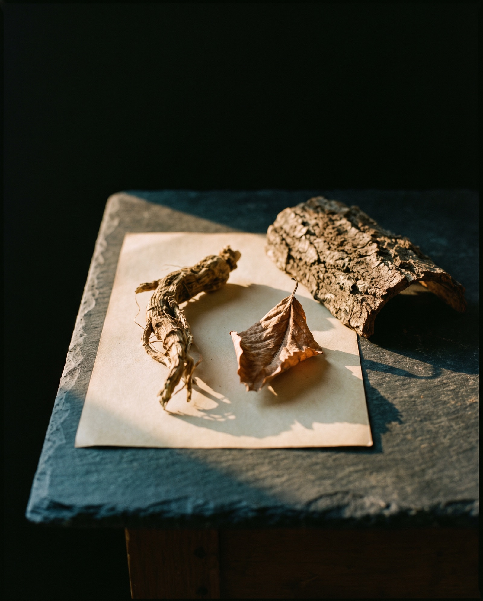
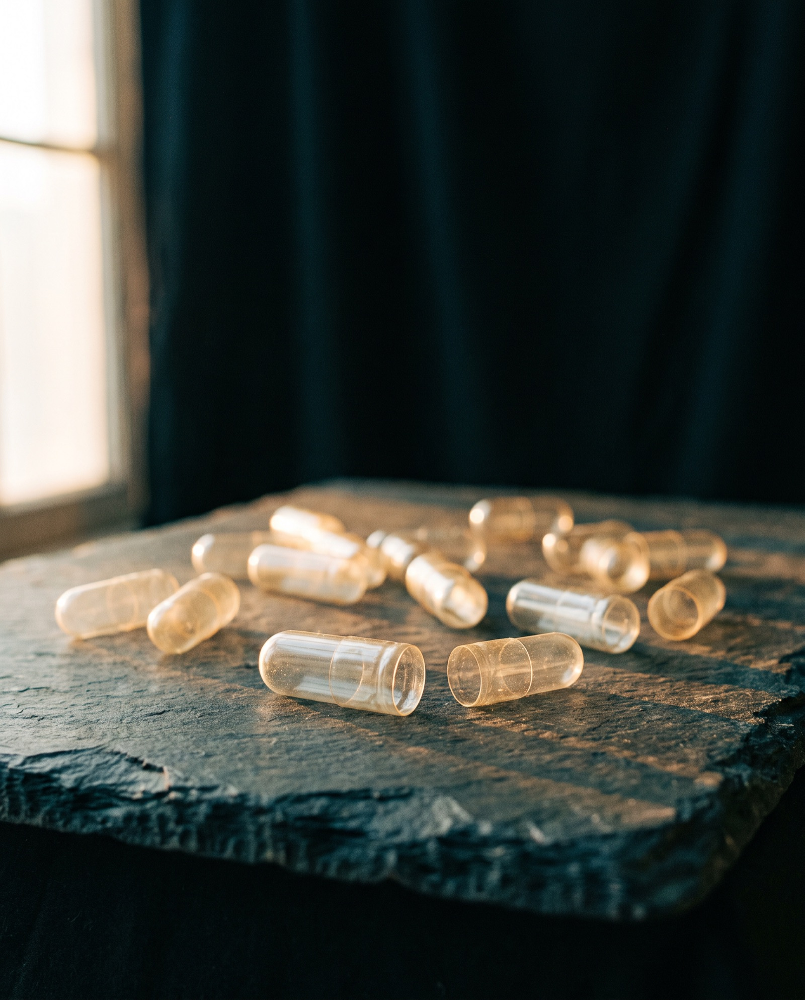
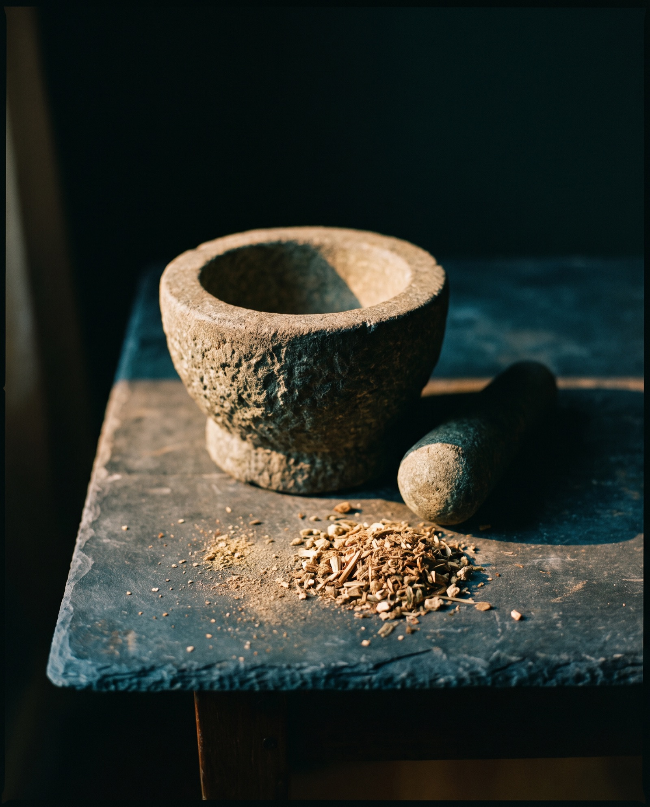

Buying well · Reference
How to read a supplement label. The front is marketing. The back is the product.
People bring us pots to look at far more often than they buy anything, and the first thing we ever do is turn the pot round. This is that turn, written down: the front of the pack, the ingredients panel line by line, what the fillers are actually there for, the cost per day arithmetic, and how to tell a claim that is allowed from one that is not.
By Reiss Davies Ausar8 September 202612 minute read

People bring us pots. Far more often than they buy anything, if I am honest about how a Tuesday on Smithdown Road actually goes. Somebody comes in holding a tub a relative pressed on them, or one they ordered at two in the morning off an advert they were not really watching, and sets it down on the counter and asks whether it is any good.
The first thing I do is turn it round. Nobody thinks much of that, it takes a second, and the turn is most of the job. The front of a pot is written by the person who wanted you to pick it up off a shelf. The back is written by the person who would have to stand behind it if somebody official ever asked. Two different people, two different jobs, one pot, and only one of them under any obligation to you at all.
So this article is that turn, written down. By the end of it you should be able to read the back of very nearly anything on a shelf, ours included, and work out what is in it, how much of it there is, what it costs you a day and whether the seller is inside the rules or outside them. Some of this will cost us sales, because it will send people off to a cheaper pot that happens to be honestly built, and that is fine. Knowledge of cellf is the only thing that makes any of this stick, and I would rather hand you that than take money off somebody who cannot yet tell the difference.
01The front of the pack
Start by noticing how little the front of a pot tells you. It has three jobs and only three: get seen at arm's length, look expensive, and give you a reason to stop walking. Not one of those three needs any information in order to work, so mostly there is none on there.
- A common name with no species after it. Sea moss, ginseng, turmeric, nettle. One common name usually covers several plants, out of different countries, at very different prices, and the cheap one goes out under the name of the dear one. Until you know the species you do not know what you bought.
- A milligram figure in big type. 1000 mg looks like a measure of strength and is nothing of the sort. It might be one capsule, or it might be a three capsule serving. It might be dried root, or an extract, or an extract plus whatever got mixed in alongside it.
Then the words themselves. They carry the whole argument, and almost none of them mean anything you could go and check.
- Natural. Says nothing about the plant, nothing about the dose and nothing about the process. Everything in every pot on that shelf began as something that grew.
- Pure. Sounds like a specification, works like a mood. If it were true of the pot, the panel on the back would already show it.
- Premium. A price signal dressed as a quality signal, there to make the shelf price feel deliberate.
- Wildcrafted. Gathered somewhere that is not a farm. Sometimes a real and expensive difference, sometimes a word typed into a design file by somebody who has never met a harvester in their life.
- High strength. Stronger than what. No reference point is given, which is the point. It borrows the authority of a comparison without making one.
- Full spectrum. Usually means whole plant material rather than an isolated fraction, which is a real distinction. On a front of pack it is there to imply completeness.
02The ingredients panel, line by line
The panel is the only part of the pack that has to be true in a way somebody could go and test. It is InForMatIon, and the front of the pot is decoration. Read it slowly, one line at a time.
The botanical name
A good panel gives you the Latin binomial, genus and species, like Withania somnifera or Panax ginseng. A common name is not unique to one plant and a binomial is. Ginseng could be Korean, American or Siberian, and that third one is not even in the same genus as the first two. Sea moss could be a cold Atlantic plant taken off rock by hand at low tide, or a farmed tropical one pulled off a rope in a warm lagoon, a difference of species, of ocean, of labour, and of several pounds a jar. A seller who paid for the dearer plant will name it. Nobody pays that bill quietly.
The plant part
Root, leaf, bark, seed, flower, fruiting body. These are different products out of one organism, with different chemistry and different prices, and the panel should say plainly which one is sat in the pot. A root that spent four years in the ground is not the leaves off the same plant, whatever the two of them cost to grow. With mushrooms, look for fruiting body or mycelium, which are again two materials and not one.


Extract or whole herb
Whole herb powder is the plant dried and milled and nothing else done to it. An extract has been soaked in water or alcohol and the liquid driven off afterwards, leaving a concentrate behind. Neither of them is automatically the better buy and anybody telling you otherwise is selling one of the two. What matters is innerstanding which one you have in your hand, because the same milligram figure means two entirely different things across that line.
Extract ratios
You will see 4:1, 10:1, sometimes 20:1. A 10:1 extract means ten kilos of dried herb went in at one end and one kilo came out at the other. That is a statement about yield. It is not a statement about strength. It does not mean ten times as much of any particular compound, because what ends up in that one kilo depends entirely on the solvent, the temperature and the time somebody gave it. A high ratio standing on its own is the front of pack number wearing a colon.
Standardisation
Standardised to five per cent of a named compound means the maker measured one marker and adjusted the batch until it hit that figure. Ginsenosides in ginseng are the usual example. It is real information and expensive to produce, because it needs a laboratory. It is also narrow: one compound, one number. A whole herb powder carrying no such figure is not worse for lacking one.
The order of the list
Ingredients are listed in descending order by weight, as they went into the mix. That one rule quietly turns the whole panel into a ranking, and the ranking is free information that most people walk straight past on their way to the price. If the plant photographed on the front of the pot comes fourth in the list, behind two bulking agents and a flow agent, then the pot is mostly not that plant. You paid for a photograph.
The order of the ingredients list is the cheapest information on the pack. Almost nobody reads it.
03Everything else in the capsule
Excipients are the ingredients in a pot for the sake of the manufacturing rather than for the sake of the person buying it. I want to be fair to them here, because the whole category gets shouted about by people selling the alternative, and shouting has never once been an argument.
- Magnesium stearate. A lubricant. Powder has to move through a filling machine at speed without sticking to the metal. Without it a fast line jams and the fill weights wander.
- Silicon dioxide. Finely divided silica that stops powder clumping and keeps it running dry. The same job as the rice in a salt cellar.
- Microcrystalline cellulose. Purified plant cellulose, used to bulk a small quantity of material up to a volume that fills the shell, and to give a tablet something to compress.
- Rice flour. The same bulking job in a more food-shaped material. It is cheap, which is why it is used and why it turns up where the plant is thin on the ground.
- Maltodextrin. A starch derived carrier. Liquid extracts are often dried by spraying them onto it, so a good deal of what is sold as extract powder is carrier by weight.
- Dicalcium phosphate. A mineral bulking agent, mostly in tablets, where it gives the press something firm to work with. It is also a source of calcium, so it is not inert.
- Titanium dioxide. A white pigment that makes shells and coatings look uniform. The rules on it have moved in recent years and are not the same in every market, so I will say only that I do not use it.
Then the shell, which is an ingredient and should be named on the panel.
- Gelatin. Animal collagen, usually bovine or porcine. Cheap and well understood, and no use to a vegetarian, a vegan, or anybody whose diet rules out one of those animals. A pack that says only gelatin has not told you which.
- HPMC. Hydroxypropyl methylcellulose, made from plant cellulose. The standard vegetarian shell.
- Pullulan. Made by fermenting starch with a microorganism. Also plant based, dearer, and chosen for how little oxygen it lets through.
None of that is sinister and I am not going to pretend it is. Every one of those items exists because somebody solved a real problem on a real production line, and a pot containing them has not cheated you out of anything.
The argument for a short list is much simpler than the one the internet usually makes, and it does not need anybody to be a villain. A capsule holds a fixed volume, that volume does not grow to be generous, so every milligram of lubricant, carrier and bulking agent in there is a milligram of room the plant did not get. Of two pots that both say 500 mg on the front, the one whose panel reads plant, shell, nothing else, is giving you more of what you came in for. That is arithmetic about volume and it holds whoever is doing the selling, us included.

04The dose, and the arithmetic nobody does
Two numbers get confused constantly and the confusion is not accidental. Capsule size is the weight of what sits in one capsule. Serving size is how many capsules the label tells you to take at once. A pack shouting 1600 mg across the front of it might be two capsules of 800 mg. The front uses whichever of the two numbers is larger, every time, without exception, so read the serving instruction before you read the milligrams.
Once you have the serving, the only figure that matters falls out in a single division. Capsules in the pack, divided by capsules a day, gives days. Price divided by days gives cost per day. Two examples off our own shelf, so you can sea it done rather than take my word for it.
| Seaking, £39.99 | 50 capsules of 800 mg. The label says two each morning, so the pack is 25 days, and £39.99 across 25 days is a shade under £1.60 a day. The pack prints 25 day supply on it, which is the same sum done for you. |
|---|---|
| Northern Soul, £34.99 or £50.00 | The gel comes in 300 ml at £34.99 and 500 ml at £50.00. One tablespoon a day is 15 ml, so the small jar is 20 days and the large one is 33. That is £1.75 a day for the cheaper jar and £1.50 a day for the dearer one. |
The second line is the whole lesson. The jar that costs fifteen pounds less on the shelf costs twenty five pence a day more to actually use. Cheap pots are usually small pots, or pots carrying a three capsule serving where the one stood next to them asks for one. The shelf price is the number designed to be compared and it is the number everybody compares. The cost per day is the number that describes what is really going to happen to you.
The same sum keeps a pot honest about itself, which is why I like it. If the count divided by the daily serving does not match the supply printed on the label, then somebody has not read their own copy back. We have that exact error on one of our own listings, where a fifty capsule pot is called a forty day supply at one a day. It is logged and it is being fixed, and I would far rather stand here and point at it than sit quietly hoping nobody does the division.
Food supplements should not be used as a substitute for a varied and balanced diet and a healthy lifestyle. Do not exceed the stated dose. Keep out of reach of young children.
05What actually has to be on there
A food supplement sold in this country carries a set of things by law, and a few more by ordinary decent practice. A pack missing a mandatory item is telling you something about the operation stood behind it, and it is rarely the only thing missing.
- The name of the food. What the thing is, in words, not the brand name.
- The list of ingredients, in descending order by weight.
- Allergens, emphasised within that list so they can be picked out at a glance.
- The net quantity, as a count, a weight or a volume.
- A best before date.
- The recommended daily portion, and a warning not to exceed the stated dose.
- The statement that food supplements should not be used as a substitute for a varied and balanced diet, which is why you have seen that sentence on every pot you have owned.
- A statement that the product should be kept out of the reach of young children.
- The name and address of the business responsible for the food. A postal address, not a web form.
Two more I would treat as expected rather than as certainly mandatory, because the rules on them depend on the product and I would rather hedge than be firm and wrong. Storage instructions are required where a product genuinely needs particular storage, which mine does, and get printed either way. A batch or lot number is standard practice on any properly run line and is what makes a recall possible, although where a date carries enough detail the marking rules can work differently.
06How to read the claims
This is the section that changes how you shop for the rest of your life, so I am going to take it slowly.
In Great Britain there is a public list called the Nutrition and Health Claims Register. It sits under Regulation 1924/2006 as retained in GB law, and it is the complete set of health claims a food business is allowed to make. Complete is the word to hold on to there. If a claim is not on that register it may not be made, and no form of words, no footnote and no disclaimer at the bottom of a page changes that by one inch.
Three things about the register do most of the work.
- Authorised claims attach to a nutrient, not to a plant. The register deals in named nutrients: iodine, iron, zinc, vitamin D. There is no authorised claim for a herb, as a herb. A claim can be made about a mineral that happens to be in a plant, and never about the plant itself.
- They carry the word normal. The authorised wordings are phrased around normal function, and the word is not decoration. It is the difference between saying a nutrient plays a part in how a body ordinarily works and saying a product will do something to yours.
- You have to have enough of it. A claim may only be made where the product contains a qualifying amount of that nutrient, and the figure has to be declared. No number, no claim.
Then there are the botanicals. When the register was assembled, thousands of claims about plants were parked pending assessment, and there they have sat ever since. On hold is the official description of it, and it has held for well over a decade now. So every claim you have ever read about a herb, on any website, in any country, in any font, is one that nobody here is currently permitted to make.
Here is the one claim this shop is allowed to make, so you can see a compliant one in its natural state. Seaking declares 75 µg of iodine in every capsule, which is a measured figure I can stand behind, and on that basis: iodine contributes to normal thyroid function and to normal energy-yielding metabolism. Two capsules contain 150 µg, the adult reference intake. The nutrient is named, the wording is the authorised one, the number is printed beside it. That sentence is available on the Seaking page and nowhere else on this site, because nothing else I sell carries a measured figure that qualifies.
Two other regimes sit alongside the register and both of them bite. Under the Human Medicines Regulations 2012, a product presented as treating or preventing a disease is a medicine, and presentation on its own is enough to make it one. Nothing has to be tested by anybody. And the CAP Code treats a seller's blog, their product pages and their customers' testimonials as that seller's own marketing, so quoting a happy customer does not carry a claim outside the rules, it only moves whose mouth it came out of.
This is why the Herbase pages read the way they read. We publish what is in the jar, where it came from, how much of it there is and what to do with it on a Tuesday morning. What it does inside a body is not mine to say and never was, it belongs to the person konsuming it, and they can say whatever they have found. It costs us sales and I know roughly how many, because I have stood there and watched somebody read a competitor's page promising them an outcome and then read ours offering a species name and a milligram figure. We decided a long time ago that this is a trade worth making, and we are still making it.
07Where the real information lives
None of the above tells you whether a batch is clean. That information does exist. It is simply not printed on the pack, and you have to go and ask for it.
- A certificate of analysis. A laboratory document, specific to a batch, listing what was tested and what came back. A serious supplier has one for every batch and will send it to a customer who asks. A generic certificate with no batch number on it is a brochure.
- Heavy metal testing. Lead, cadmium, mercury and arsenic. It matters most for roots and for seaweeds, which take up what is in the ground or the water around them. Ask whether it is tested, per batch, and by whom.
- A batch number you can quote back. It ties the pot in your hand to the paperwork in somebody's office. Without it nobody can answer a question about your pot, only about the product in general.
And then the simplest tool of the lot, which people forget they are holding. You can ring a shop up and ask. Which species, which part of the plant, whether that batch has been tested for heavy metals, and what the pot works out at per day. Four questions, two minutes, no expertise required of you at all. How the answers arrive will tell you as much as the answers themselves do.
08Bring it in
If you have a pot at home and you are not sure about it, bring it down to the shop. 599 Smithdown Road, Tuesday to Sunday. Put it on the counter, I will turn it round with you and read the back of it out loud, and you take it home again afterwards in the same bag you carried it in. We do this most weeks. Not once has anybody needed to buy a thing for it to have been worth the ten minutes.
Quite often the answer is that the pot is fine and they should go home and finish it. Sometimes the answer is that they have paid forty pounds for bulking agent in a nice jar, and that is a harder conversation and a shorter one. Either way they walk back out able to do the whole thing themselves next time, without me, and that is the part I care about. It all counts.
There are more pieces like this one in the journal, and the shop is open Tuesday to Sunday if you would rather ask somebody in person.

Reiss Davies Ausar
Founder and formulator at Herbase. Trading online since 2019 and behind the counter at 599 Smithdown Road, Liverpool, since August 2024. Author of three books on herbal practice. Book an hour with him if you want to go into more detail.